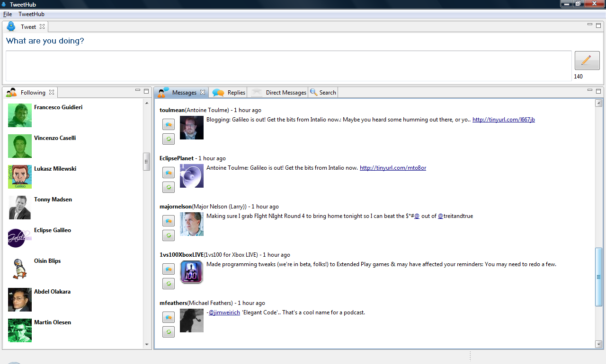

an eclipse runtime project
New and Noteworthy
3.1.0 Release
Return to ECF download page
New and Noteworthy for 3.0.0
New and Noteworthy for 2.0.0
New and Noteworthy for 2.1.0

|
eclipse communication framework
an eclipse runtime project New and Noteworthy 3.1.0 Release Return to ECF download page New and Noteworthy for 3.0.0 New and Noteworthy for 2.0.0 New and Noteworthy for 2.1.0 |
|
|
ECF 3.1 has support for creating REST-based remote services. ECF's existing remote services API has been extended to specifically support the access of REST-based services (such as the Twitter API). See ECF REST API wiki page for more details and examples.
|
|
|
OSGi 4.1 defines an EventAdmin service for delivering events asynchronously or synchronously to an arbitrary set of listeners. ECF has created a distributed version of the EventAdmin service, which uses publish and subscribe to deliver Events to remote listeners. The This implementation uses the abstract ECF shared object API, which abstracts publish/subscribe communication above the transport, so that that the use the Distributed EventAdmin service may be bound at runtime to a selected message bus. For example, ActiveMQ/JMS may be used as the message bus, or ECF generic groups, or JavaGroups/reliable multicast, or other transports. See the Distributed EventAdmin wiki page for documentation and examples.
|
|
|
Community-initiated work is underway on a Twitter client (called TweetHub) that uses ECF APIs, as well as Eclipse RCP user interface technologies. For details of this work, and to participate, see here. Here is a screen shot from a recent version of the TweetHub work  |
|
|
As part of the ECF RFC119/Distributed OSGi implementation in ECF 3.0/Galileo, two discovery providers were previously released: one based upon jSLP (Service Location Protocol aka RFC 2608) and the other based upon Apple's Bonjour/zeroconf protocol. File-based discovery provides a way to publish and discover remote service endpoints without using a network protocol at all (or in addition to a network protocol), but rather using an XML file that describes the endpoints of the remote services available. See the File-based Discovery wiki page for documentation and examples. |